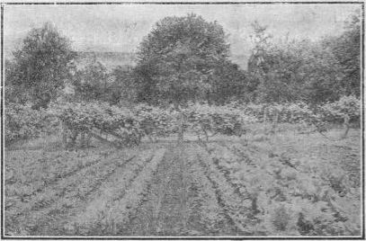

Chapter XXVI. Suggestions On Laboratory Work
Description
This section is from the book "Vegetable Gardening", by Ralph L. Watts. Also available from Amazon: Vegetable Gardening.
Chapter XXVI. Suggestions On Laboratory Work
704. Importance
A course in vegetable gardening cannot be fully satisfactory without suitable laboratory work accompanying the lectures or recitations. Laboratory work is essential for three reasons: (1) It is the most effective means of teaching; (2) it creates enthusiasm; (3) it inspires confidence. When the laboratory work is properly managed the student not only learns methods, but he grasps principles and soon possesses a much clearer knowledge of the subject than is possible without such exercises.
705. Methods
Laboratory work in vegetable gardening may be classified as follows: (1) Special exercises in seed testing, sowing, transplanting, spraying, constructing hotbeds and cold frames, preparing vegetables for market, etc. (See 706.) (2) Work for which the student is held daily responsible. A course in vegetable gardening should be conducted the second half of the college year, since it will then be possible for the student to acquire experience in the starting of early plants and in the making of a home or a commercial vegetable garden. This idea should be carried out whenever facilities will permit. At the beginning of the course each student should be informed as to the dimensions of the plat which he will be expected to plant and cultivate. Give him to understand that it is his problem; that he is expected to plan his work and then work his plan. A map showing the arrangement of the planting should be submitted by the student and approved by the instructor. It is necessary, of course, that the student be provided with seeds, plants, transplanting tools and other equipment, but he must be held absolutely responsible for all details of the work which requires almost daily attention from seed sowing until the close of the college term. The students usually become very much interested in garden making, and under favorable conditions succeed remarkably well, considering that only a small portion of their time can be devoted to this work. (See Figures 108, 109 and no.) Numerous plans of intercropping may be employed in student gardens. (3) Frequent problems should be given in connection with courses in vegetable gardening. The students should be required to prepare definite plans and directions for the planting of home gardens, market gardens and truck farms. There is no limit to the num-ber of practical problems that may be assigned relating to every phase of garden work. For example, what are the seed, hotbed and cold frame requirements to grow enough plants for 10 acres of early cabbage intercropped with lettuce? And again, how much and what kinds of fertilizers will be needed for a typical truck farm of 100 acres to supply the nearast city market? Problems in companion and succession cropping and rotation are exceedingly valuable. Work of this character may constitute a part of the laboratory practice, although most of it should be done between class periods.
Fig. 108. student gardens at the pennsylvania state college.
706. Definite Lines Of Work
As the character of the work undertaken will vary exceedingly in various localities, the following notes must be regarded as merely suggestive.
Chapter III, Soils
If there are different soil types in the community they should be inspected, if possible, to determine their adaptability for garden crops.
Chapter IV, Tillage And Tillage Tools
(1) Plow part of the garden plat in the fall and the remainder early in the spring. Note the difference in the moisture supply and in other physical properties. (2) Study the various types of tools on the premises or at local supply houses. (3) If possible, make an actual test of the important types of hand and horse implements.
Chapter V, Stable Manures
(1) Make applications of various classes of manure for a few important vegetables. Demonstrations with fresh and rotten manure should prove especially valuable. (2) Make a compost pile of manures and other materials if available.
Chapter VI, Green Manures And Cover Crops
Study the character and extent of top and root growth of different classes of green manures and cover crops growing in the vicinity.
Chapter VII, Commercial Fertilizers
(1) Determine the fertilizer requirement of the plat to be planted. (2) Each student should mix and apply the materials which have been determined for his particular plat. (3) Apply nitrate of soda at different stages of growth. Various methods of application may also be tested.
Chapter VIII, Irrigation
Study the various parts used in the overhead system of irrigation.
Chapter IX, Insect Enemies And Diseases
(i) Study the various types of nozzles and pumps. (2) Prepare spraying mixtures, unless this experience has been gained in previous courses. (3) Make the necessary applications for the control of insects or diseases in the assigned plats.
Chapter X, Seeds And Seed Growing
(1) If the course is offered in the fall, there will be abundant opportunity for the selection, harvesting, cleaning and curing of seeds. (2) Make germination tests of old and new seeds.
Fig. 109. students at work IN the gardens of the pennsylvania state college.
Chapter XI, Construction Of Hotbeds
(1) Practice in painting and glazing hotbed sash. (2) Construct frames. (3) Select and prepare the manure and fill the pit.
Chapter XII, Construction Of Cold Frames
If possible the student should have actual experience in frame construction.
Chapter XIV, Seed Sowing
(i) Sow seeds under glass for the early plants needed in the student gardens. Special care should be exercised in preparing soil for this work, and the seed beds should be cared for daily. (2) Sowing in the student plats. (3) Demonstrations under favorable and unfavorable conditions.
Chapter XV, Transplanting
(1) Practice exercises, using different methods. (2) Transplant seedlings to be used in garden plats, and care for them daily. (3) Transplant in the student gardens at the proper time.
Chapter XVI, Growing Early Vegetable Plants Under Glass
The full responsibility in growing the plants needed for the student gardens is essential in the training of efficient gardeners. Ventilation of frames should be managed by an employee, because students are often engaged in other college duties when this work must be done. It is also usually important for an assistant to attend to placing and removing mats. All watering in the greenhouse or frames should be done by the student.
Chapter XVII, Marketing
(1) Any part which the students can take in harvesting and preparing produce for market will be excellent training. (2) The various types of packages should be exhibited and their merits discussed.
Chapter XIX, The Storage Of Vegetables
It may be possible for the students to gain practical experience in the storing of vegetables by various methods.
Chapter XXI, Cultural Directions
The student garden plats afford ample opportunity for practice in the growing of vegetables. Emulation among the students should be encouraged. The plat work should be conducted in a systematic manner. There should be close adherence to the principles as taught in the class room. The college garden is a different proposition from the graded school garden. It is a miniature but real commercial enterprise in which science is brought to bear at every point. Food and moisture requirements are considered; planting distances determined; habits of growth studied; insect and fungous enemies combated and products harvested and prepared for market.
The gardens should not be larger than can be properly cared for by the student in the time available for this work; 20 x 50 feet is about right for a two-hour laboratory period weekly. Much of the work will be done at odd times by the students. This is important, because rainy weather or an excessive supply of soil moisture often prevents work at the scheduled hours.
Fig. 110. students at work in the gardens at the pennsylvania state college.
No allusion has been made in this chapter to the systematic study of vegetables. The student gardens, however, afford a large amount of excellent material for this work, but such study should be treated in a separate course, as indicated in the introductory remarks.
Continue to:
Tags
plants, crops, gardening, cultivated, harvesting, food ,greenhouses, fertiliser, vegitables